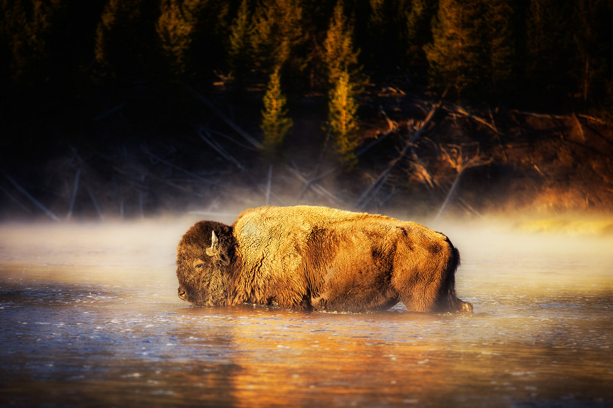
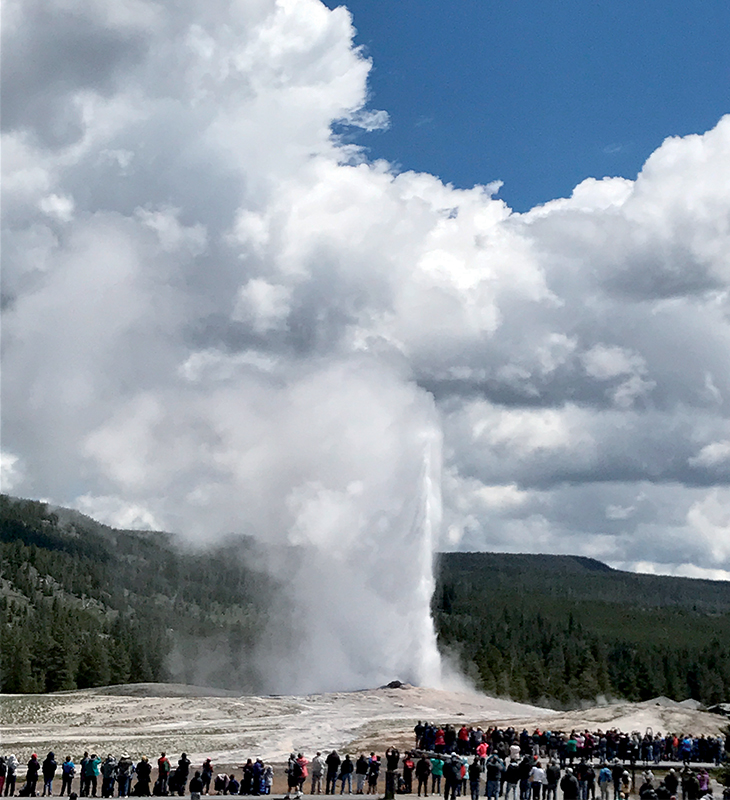

The sign of yellowstone park
Yellowstone National Park is an American national park located in Wyoming, Montana, and Idaho.
It was established by the U.S. Congress and signed into law by President Ulysses
S. Grant on March 1, 1872. Yellowstone was the first national park in the U.S.
and is also widely held to be the first national park in the world.
No hunters ... no poachers...
"Beware of Bison"
Yellowstone is the only place in the United States where bison (Bison bison) have lived continuously since
prehistoric times.Yellowstone bison are exceptional because they
comprise the nation’s largest bison population on public land and are among the
few bison herds that have not been hybridized through interbreeding with cattle.
You will see them mostly in the green parts of yellow stone park

The famous 'old faithful' geyser
Old Faithful is a cone geyser located in Yellowstone National Park in Wyoming, United States.
It was named in 1870 during the Washburn-Langford-Doane Expedition and was the first geyser
in the park to receive a name. It is a highly predictable geothermal feature, and
has erupted every 44 to 125 minutes since 2000.
You will see them mostly in the green parts of yellow stone park

mamoth hills
Cretaceous Shale also called geyserite grayish-white rock found around geysers and hot springs
it grows very slowly sedimentary rock formed by minerals calcite and aragonite.
In Yellowstone it is located under Mammoth Hot Springs Rhyolite a dark and fine sedimentary rock formed